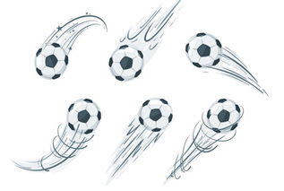

Principle of movement
The principle of movement is a path the viewer’s eyes take across the work of art. An artist can direct the viewer’s eye movement from one part of a design to another by using lines, shapes and colours. Different figures of animals, birds or humans in different movements can be used to create an illusion of movement as shown in Figure 1.23.

Principle of harmony
The principle of harmony is defined as an agreement of visual elements in a work of art. The impression created by the harmony of elements of art is called visual satisfaction. Harmony produces a visually satisfying effect of combining similar or related elements of a work of art. Figure 1.24 shows artwork with harmony.
Source: https://www.pinterest.com/pin/597571444293843696/. Retrieved on 12th October 2022